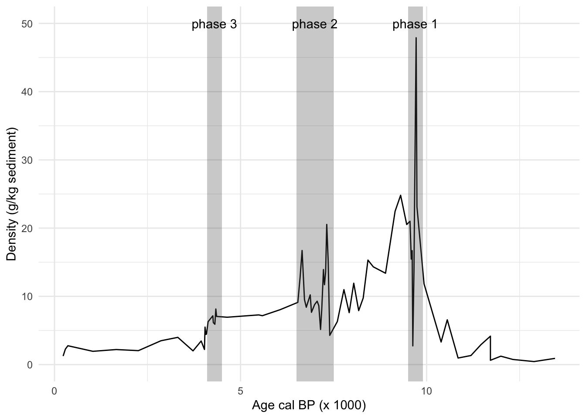
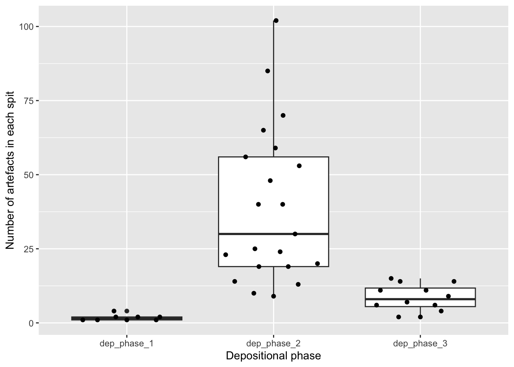
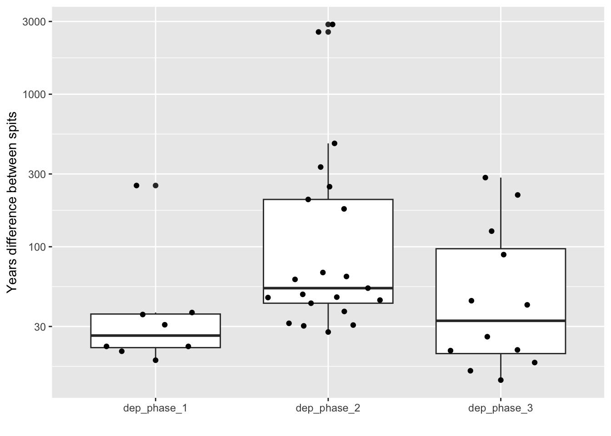
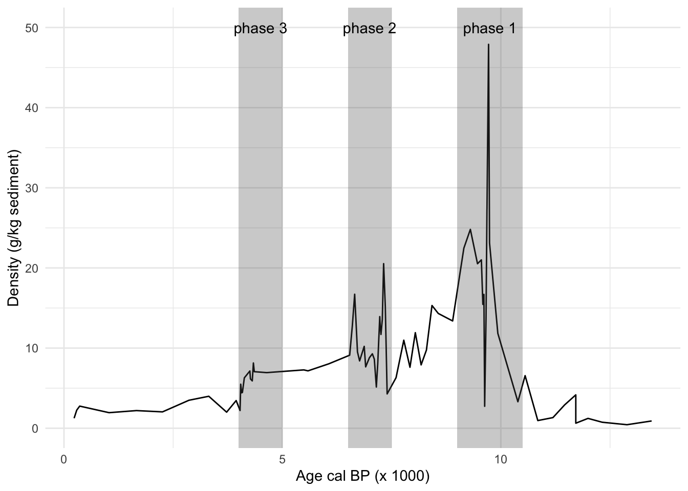
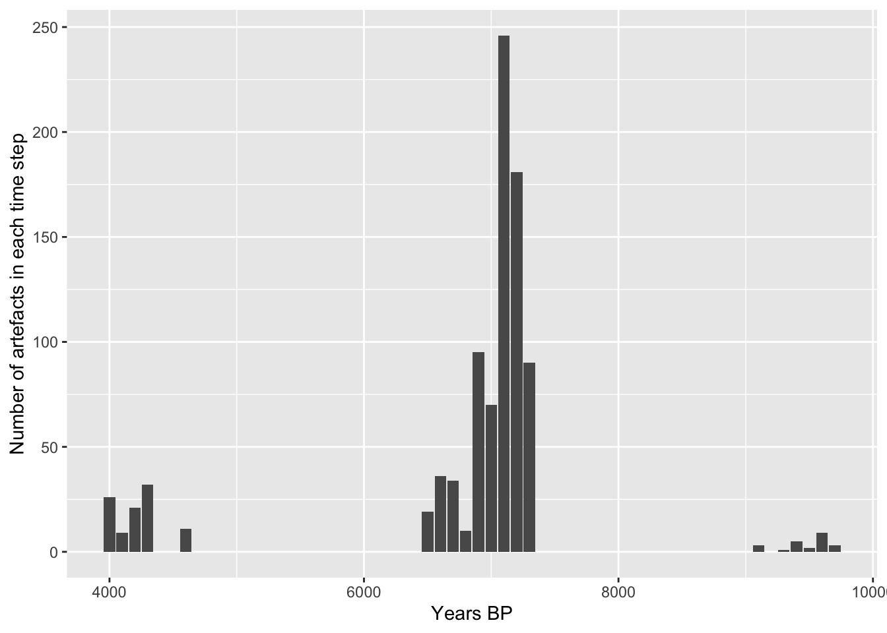
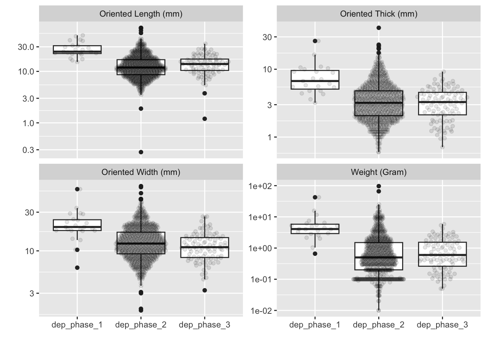
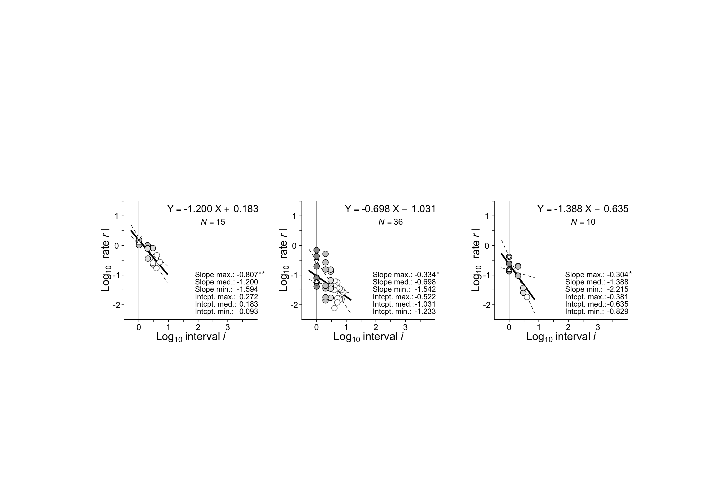

# get individual artefact data
library(tidyverse)
# load artefact density data and interpolated age per spit data, prepared in BM's
# notes on Talibue clay paper Rmd
t_arts_sq_B_join <- read_csv(here::here("data/data-aqy.2019.134/data/t_arts_sq_B_join.csv"))
# load individual artefact counts data
source(here::here("analysis/001-prepare-data.R"))
source(here::here("analysis/002-clean-data.R"))
# Let's join the individual artefact data to the individual spit ages from
# the age calculations above
tb_complete_flakes_clean_ages <-
tb_complete_flakes_clean %>%
left_join(t_arts_sq_B_join)Selection, stasis, and drift: Identifying and quantifying evoluationary change in artefact time series
This block of code imports artefact data and dating data, so we can know the ages of each excavated layer, and how many artefacts are in each layer, and all the measurements of those artefacts.
This next block of code explores dividing the excavation into three phases, according to the depositional phases we identified in our paper:
Bulbeck, D., et al. (2019). Patterned and plain baked clay from pre-pottery contexts in Southeast Sulawesi, Indonesia. Antiquity, 93(371), 1284-1302. doi:10.15184/aqy.2019.134
In that paper we proposed these periods for the three phases: 4100-4500, 6500-7500, 9500-9900. Let’s see if those are suitable for evolutionary rate analysis. Here’s how they look on the overall time series of artefacts, we can see that phase one and phase three are relatively short:
# here are the depositional units from the paper
phase_3_depositional_unit <- c(4100, 4500)
phase_2_depositional_unit <- c(6500, 7500)
phase_1_depositional_unit <- c(9500, 9900) plot_find_densities_by_age <- function(){
t_arts_sq_B_join %>%
select(-Spit,
-SQB_center_end_level,
-SQE_center_end_level,
-sq_e_cumul_depth_below_surface,
-sq_b_cumul_depth_below_surface) %>%
gather(material,
density,
-age) %>%
filter(material == "Lithics") %>%
ggplot(aes(age/1000,
density)) +
geom_line() +
ylab("Density (g/kg sediment)") +
xlab("Age cal BP (x 1000)") +
theme_minimal() +
annotate("rect",
alpha = 0.3,
xmin = phase_3_depositional_unit[1]/1000,
xmax = phase_3_depositional_unit[2]/1000,
ymin = -Inf,
ymax = Inf) +
annotate("text",
label = "phase 3",
x = mean(phase_3_depositional_unit) /1000,
y = 50) +
annotate("rect",
alpha = 0.3,
xmin = phase_2_depositional_unit[1]/1000,
xmax = phase_2_depositional_unit[2]/1000,
ymin = -Inf,
ymax = Inf) +
annotate("text",
label = "phase 2",
x = mean(phase_2_depositional_unit) /1000,
y = 50) +
annotate("rect",
alpha = 0.3,
xmin = phase_1_depositional_unit[1]/1000,
xmax = phase_1_depositional_unit[2]/1000,
ymin = -Inf,
ymax = Inf) +
annotate("text",
label = "phase 1",
x = mean(phase_1_depositional_unit) /1000,
y = 50)
}
plot_find_densities_by_age()
A key concern is that we need a suitable number of time steps in order to compute a rate with some confidence. It’s not clear what the minimum number of time steps is for this, I’m going to guess that about five is a good target. Starting with that guess, do we have about five time steps in the span of each of our depositional units? Another way to say this is do we have five spits or excavation layers within each depositional unit? Let’s have a look:
# how many spits in each depositional unit? We start with a data frame that has
# one row per artefact
spits_per_depositional_unit <-
tb_complete_flakes_clean_ages %>%
group_by(depositional_phase) %>%
summarise(n_spits = n_distinct(Spit))
spits_per_depositional_unit# A tibble: 4 × 2
depositional_phase n_spits
<chr> <int>
1 dep_phase_1 8
2 dep_phase_2 21
3 dep_phase_3 12
4 no_phase 22We have >5 spits per depositional unit, so that’s a good start. But some spits probably have very few artefacts in them, which makes comparing across spits unreliable. We may need to group some spits together to get samples that provide reliable comparisons. Let’s see how many artefacts are in the spits in the depositional units:
library(ggbeeswarm)
tb_complete_flakes_clean_ages %>%
filter(depositional_phase != "no_phase") %>%
group_by(Spit,
depositional_phase) %>%
tally() %>%
ggplot() +
aes(depositional_phase, n) +
geom_boxplot() +
geom_quasirandom() +
xlab("Depositional phase") +
ylab("Number of artefacts in each spit")
We can see that for depositional phase two we have a pretty good number of artefacts per spit. But for depositional phases one and three, the numbers are very small, which is not ideal. We should probably expand the number of spits in each phase, and combine some spits together to make comparisons more robust. Let’s see how much time is represented by each spit in each phase, that might give us some ideas about how to aggregate spits.
age_diff_each_spit <-
tb_complete_flakes_clean_ages %>%
distinct(Spit, .keep_all = TRUE) %>%
select(Spit, age, depositional_phase) %>%
mutate(abs(across(age, ~.x - lag(.x)))) %>%
group_by(depositional_phase) %>%
mutate(mid_age_diff = mean(abs(age), na.rm = TRUE)) %>%
filter(depositional_phase != "no_phase")
ggplot(age_diff_each_spit) +
aes(depositional_phase,
age) +
geom_boxplot() +
geom_quasirandom() +
xlab("") +
ylab("Years difference between spits") +
scale_y_log10()
Looks like the median age difference between spits ranges between 30 and 50 years, which is about the same as the errors on the radiocarbon dates that we got from the site, that we see in Table 1 of the paper. Phase one is a bit smaller, so some aggregation is ok there. So I think all we need to do is boost the sample size for phase one, let’s try it:
# let's update the ranges for phase one and three
phase_3_depositional_unit <- c(4000, 5000)
phase_1_depositional_unit <- c(9000, 10500)
# and plot the phases again to see how that looks, yes, much wider
plot_find_densities_by_age()
# what difference does this make to the number of spits and artefacts in phase one?
tb_complete_flakes_clean_ages %>%
filter(between(age, !!!phase_1_depositional_unit)) %>%
group_by(Spit) %>%
summarise(n_artefacts = n())# A tibble: 11 × 2
Spit n_artefacts
<dbl> <int>
1 53 3
2 54 1
3 55 5
4 56 1
5 58 1
6 59 2
7 60 4
8 61 2
9 62 1
10 63 1
11 64 2time_step <- 100We have more spits, which is great, but still only a very small number of artefacts per spit. Let’s consider a different approach. Instead of grouping by spit, let’s group by year interval. Since we have an age for each spit, we can group together all spits within a certain age range, and combine the artefacts in those spits to represent that age range. Here’s how many artefacts we have in each time step when we combine spits to represent 100 years.
# explore the counts of artefacts in each phase and time step
dep_phase_3_count <-
tb_complete_flakes_clean_ages %>%
filter(between(age, !!!phase_3_depositional_unit)) %>%
mutate(age_interval = floor(age/time_step)*time_step) %>%
select(Spit, age, age_interval) %>%
count(age_interval)
dep_phase_2_count <-
tb_complete_flakes_clean_ages %>%
filter(between(age, !!!phase_2_depositional_unit)) %>%
mutate(age_interval = floor(age/time_step)*time_step) %>%
select(Spit, age, age_interval) %>%
count(age_interval)
dep_phase_1_count <-
tb_complete_flakes_clean_ages %>%
filter(between(age, !!!phase_1_depositional_unit)) %>%
mutate(age_interval = floor(age/time_step)*time_step) %>%
select(Spit, age, age_interval) %>%
count(age_interval)
list(dep_phase_1 = dep_phase_1_count,
dep_phase_2 = dep_phase_2_count,
dep_phase_3 = dep_phase_3_count) %>%
bind_rows(.id = "phase") %>%
ggplot() +
aes(age_interval,
n) +
geom_col() +
ylab("Number of artefacts in each time step") +
xlab("Years BP")
There are still very few artefacts in phase one, we may just have to carry on with it.
Let’s get the measurement data for individual artefacts in each time step of each phase so we can analyse their rates of change. Here are the distributions of four basic measurements of the stone artefacts over the three depositional phases (each data point is one artefact):
# prepare the artefact data for rate analysis
basic_measurement_cols <-
c("Oriented Length (mm)",
"Oriented Width (mm)" ,
"Oriented Thick (mm)" ,
"Weight (Gram)",
"age",
"age_interval")
dep_phase_3_artefacts <-
tb_complete_flakes_clean_ages %>%
filter(between(age, !!!phase_3_depositional_unit)) %>%
mutate(age_interval = floor(age/time_step)*time_step) %>%
select(all_of(basic_measurement_cols))
dep_phase_2_artefacts <-
tb_complete_flakes_clean_ages %>%
filter(between(age, !!!phase_2_depositional_unit)) %>%
mutate(age_interval = floor(age/time_step)*time_step) %>%
select(all_of(basic_measurement_cols))
dep_phase_1_artefacts <-
tb_complete_flakes_clean_ages %>%
filter(between(age, !!!phase_1_depositional_unit)) %>%
mutate(age_interval = floor(age/time_step)*time_step) %>%
select(all_of(basic_measurement_cols))
list(dep_phase_1 = dep_phase_1_artefacts,
dep_phase_2 = dep_phase_2_artefacts,
dep_phase_3 = dep_phase_3_artefacts) %>%
bind_rows(.id = "phase") %>%
pivot_longer(cols = c(starts_with("Oriented"),
"Weight (Gram)")) %>%
ggplot() +
aes(phase,
value) +
geom_boxplot() +
geom_quasirandom(alpha = 0.1) +
facet_wrap( ~name, scales = "free_y") +
scale_y_log10() +
ylab("") +
xlab("")
Is the change in artefact measurements between the phases due to selection, stasis or random drift? To answer this question we need to prepare the data for input into the functions from Gingerich’s book Rates of Evolution: A Quantitative Synthesis. The artefact data need to by summarised so we have a mean, standard deviation and count of artefacts per time step. Let’s do this summarising:
dep_phase_3_artefacts_summary <-
dep_phase_3_artefacts %>%
group_by(age_interval) %>%
summarise(mean_ol = mean(`Weight (Gram)`),
sd_ol = sd(`Weight (Gram)`),
n = n())
dep_phase_2_artefacts_summary <-
dep_phase_2_artefacts %>%
group_by(age_interval) %>%
summarise(mean_ol = mean(`Weight (Gram)`),
sd_ol = sd(`Weight (Gram)`),
n = n())
dep_phase_1_artefacts_summary <-
dep_phase_1_artefacts %>%
group_by(age_interval) %>%
summarise(mean_ol = mean(`Weight (Gram)`),
sd_ol = sd(`Weight (Gram)`),
n = n())idrx3 <- roev::DataPrep(dep_phase_3_artefacts_summary)
idrx2 <- roev::DataPrep(dep_phase_2_artefacts_summary)
idrx1 <- roev::DataPrep(dep_phase_1_artefacts_summary)
idrx1 <- apply(idrx1, 2, jitter, amount = 0.01)xr <- c(-20, 20)
yr <- c(-2, 8)
plot(xr, # set up plot
yr, # some trial and error required here
type = 'n',
xaxt = 'n',
yaxt = 'n',
axes = FALSE,
ann = FALSE,
asp = 1) # aspect ratio (y/x))
bootresultd1 = roev::TriPanelBC(idrx1, # idrx matrix
"r", # mode (diff/rate)
-15, # panel placement coordinate x
3, # panel placement coordinate y
1000, # number of bootstrap replications
"all", # 'mode' as "medians","all","mixed"
1.5, # circle size for points (1.5 or 2)
"normal") # 'equation' position
bootresultd2 = roev::TriPanelBC(idrx2, # idrx matrix
"r", # mode (diff/rate)
-3, # panel placement coordinate x
3, # panel placement coordinate y
1000, # number of bootstrap replications
"all", # 'mode' as "medians","all","mixed"
1.5, # circle size for points (1.5 or 2)
"normal") # 'equation' position
bootresultd3 = roev::TriPanelBC(idrx3, # idrx matrix
"r", # mode (diff/rate)
10, # panel placement coordinate x
3, # panel placement coordinate y
1000, # number of bootstrap replications
"all", # 'mode' as "medians","all","mixed"
1.5, # circle size for points (1.5 or 2)
"normal") # 'equation' position 